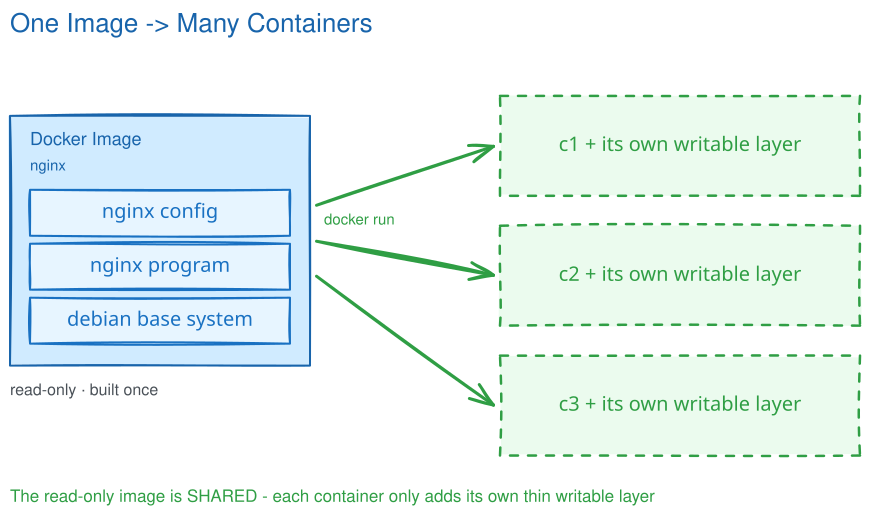
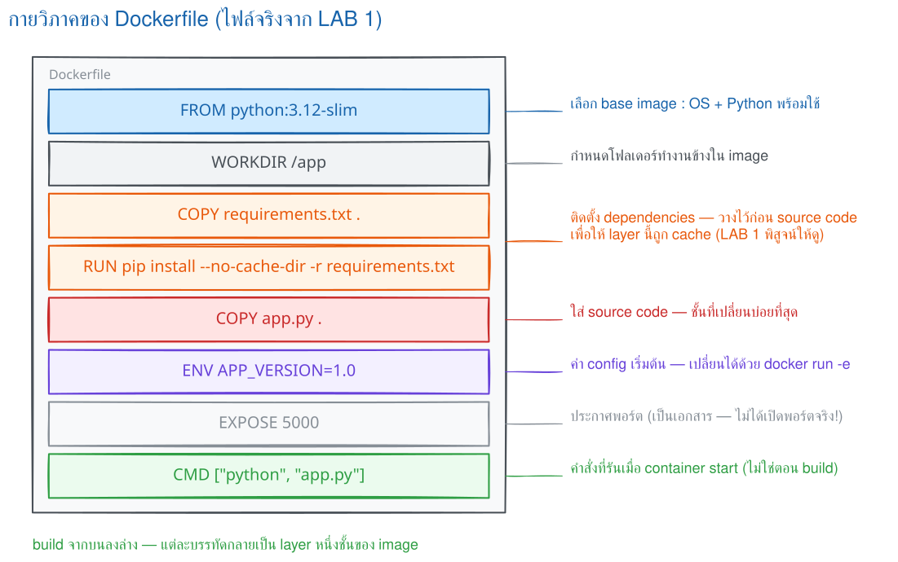
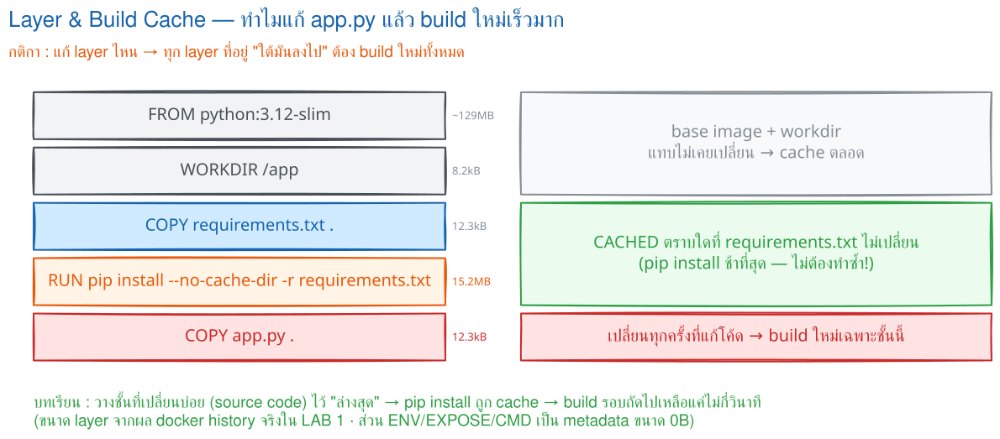
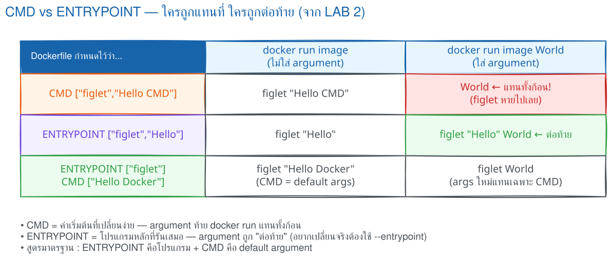

Dockerfile = สูตร
ชุดคำสั่งที่ทำซ้ำได้: ใช้ระบบตั้งต้น, คัดลอกไฟล์, ติดตั้งแพ็กเกจ และตั้งคำสั่งเริ่มแอป
ฉบับนี้พาเรียนจากง่ายไปยากสำหรับผู้ที่เพิ่งรู้จัก docker run เมื่อสัปดาห์ก่อน เริ่มจากอ่านสูตรทีละบรรทัด แล้วค่อยทดลอง cache, คำสั่งเริ่มโปรแกรม และตัวอย่างหลายเทคโนโลยี
จะได้อะไรจากตอนนี้: แยกให้ออกว่าอะไรคือสูตร อะไรคือผลที่สร้างเสร็จ และอะไรคือโปรแกรมที่กำลังทำงาน พร้อมเข้าใจว่า build กับ run เกิดคนละช่วงเวลา
Dockerfile คือไฟล์ข้อความธรรมดาที่บอก Docker ว่าให้ประกอบ image อย่างไรทีละขั้นตอน โดยทั่วไปตั้งชื่อไฟล์ว่า Dockerfile และเก็บไว้ที่รากของโปรเจกต์
ชุดคำสั่งที่ทำซ้ำได้: ใช้ระบบตั้งต้น, คัดลอกไฟล์, ติดตั้งแพ็กเกจ และตั้งคำสั่งเริ่มแอป
แม่แบบแบบอ่านอย่างเดียว เก็บเป็น layers และนำไปใช้สร้าง container ได้หลายครั้ง
อินสแตนซ์ของ image ที่มีสถานะการรัน เครือข่าย และ filesystem เขียนได้ของตนเอง

docker build → Image → docker run → Container
จะได้อะไรจากตอนนี้: อ่าน Dockerfile ของ Flask 8 บรรทัดจากบนลงล่าง และตอบได้ว่าแต่ละบรรทัดจำเป็นต่อการสร้างหรือเริ่มแอปอย่างไร
ตัวอย่างนี้เป็น Flask app ขนาดเล็ก แต่รูปแบบเดียวกันใช้ได้กับแอปจริงจำนวนมาก
ก่อนอ่านสูตร ดูก่อนว่าในครัวมีอะไร:
flask-project/ ├── Dockerfile ← สูตรที่ใช้ COPY ไฟล์เหล่านี้ ├── .dockerignore ← ตัดไฟล์ที่ไม่ควรส่งเข้า build context ├── requirements.txt ← COPY ก่อนเพื่อใช้ cache └── app.py ← COPY เข้า /app เพื่อให้ CMD เริ่มแอป
FROM python:3.12-slim WORKDIR /app COPY requirements.txt . RUN pip install --no-cache-dir -r requirements.txt COPY app.py . ENV APP_VERSION=1.0 EXPOSE 5000 CMD ["python", "app.py"]

FROM python:3.12-slim เลือกจุดตั้งต้นที่มี Python พร้อมใช้งาน จึงไม่ต้องติดตั้งระบบภาษาเองตั้งแต่ศูนย์WORKDIR /app กำหนดโต๊ะทำงานใน image ให้คำสั่งถัดไปอ้างพาธเดียวกันและอ่านง่ายCOPY requirements.txt . นำรายการแพ็กเกจเข้ามาก่อน เพราะต้องใช้เป็นข้อมูลให้ขั้นติดตั้งRUN pip install ... ติดตั้งแพ็กเกจในช่วงสร้าง image ผลที่ติดตั้งแล้วจึงอยู่ใน imageCOPY app.py . นำโค้ดแอปเข้ามาหลังติดตั้งแพ็กเกจ การจัดลำดับนี้จะมีประโยชน์เรื่อง cache ในตอนที่ 4ENV APP_VERSION=1.0 ตั้งค่าตัวแปรแวดล้อมเริ่มต้นที่แอปอ่านได้เมื่อทำงานEXPOSE 5000 บันทึกว่าแอปตั้งใจฟังพอร์ต 5000 แต่ยังไม่ได้เปิดทางจากเครื่องเราเข้าสู่ containerCMD ["python", "app.py"] ระบุคำสั่งเริ่มต้นเมื่อ container ถูกสร้างให้ทำงาน รูปแบบรายการช่วยแยกชื่อโปรแกรมกับ argument ชัดเจนFROM, WORKDIR, COPY, RUN, ENV, EXPOSE และ CMD เท่านี้พอสำหรับไฟล์แรก ส่วนคำสั่งขั้นสูงจะค่อย ๆ มาในตอนถัดไปCMD image ยัง build สำเร็จได้หรือไม่ แล้ว container จะรู้ได้อย่างไรว่าควรเริ่มโปรแกรมอะไร?จะได้อะไรจากตอนนี้: เปลี่ยน Dockerfile ให้เป็น image ที่มีชื่อ แล้วสร้าง container พร้อม map พอร์ต รวมถึงใช้คำสั่ง 5 ขั้นเพื่อตรวจสอบและเก็บกวาดงาน
เปิด terminal ที่โฟลเดอร์เดียวกับ Dockerfile แล้ว build image:
docker build -t myapp:1.0 . # -t = ชื่อ:tag ของ image # . = build context ที่ส่งให้ Docker
จากนั้นสร้าง container และ map พอร์ต:
docker run -d --name myapp -p 8081:5000 myapp:1.0 # host:container = 8081:5000 curl http://localhost:8081
docker image ls แสดง repository, tag, image ID, เวลาที่สร้าง และขนาดdocker ps; เติม -a เพื่อรวม container ที่หยุดแล้วdocker logs -f myapp โดย -f หมายถึงติดตาม log ต่อเนื่องdocker exec -it myapp sh เปิด shell ใน container ที่กำลังทำงานdocker rm -f myapp; image ยังอยู่และนำมาสร้าง container ใหม่ได้| ส่วนของคำสั่ง | ความหมาย |
|---|---|
-d | Detached mode ให้ container ทำงานเบื้องหลังและคืน prompt ให้ terminal |
--name myapp | ตั้งชื่อที่จำง่าย ใช้แทน container ID ในคำสั่ง logs, exec, stop และ rm |
-p 8081:5000 | ส่ง traffic จากพอร์ต 8081 ของ host ไปพอร์ต 5000 ใน container แอปข้างในต้องฟังที่ 0.0.0.0:5000 |
-e KEY=value | ส่ง environment variable เข้า container ตอนเริ่มทำงาน โดยทับค่า default จาก ENV ได้ |
--rm | ลบ container อัตโนมัติเมื่อหยุด เหมาะกับการทดลอง แต่ไม่เหมาะเมื่ออยากเก็บ container ไว้ตรวจภายหลัง |
-p 8081:5000 ถ้าเปลี่ยนเฉพาะเลข 8081 แอปข้างใน container ต้องแก้ให้ฟังพอร์ตใหม่ด้วยหรือไม่?จะได้อะไรจากตอนนี้: เห็นความสัมพันธ์ระหว่างลำดับคำสั่งกับ layer cache และพิสูจน์ด้วย log จริงว่าขั้นติดตั้งแพ็กเกจถูกนำกลับมาใช้ได้
Docker build Dockerfile จากบนลงล่าง และเก็บผลแต่ละขั้นเป็น layer หากขั้นใดหรือไฟล์ที่มันอ้างถึงเปลี่ยน layer นั้นและทุก layer ถัดลงไปจะต้อง build ใหม่

COPY requirements.txt . RUN pip install -r requirements.txt COPY . .
แก้โค้ดแอปแล้ว dependency layer ยังใช้ cache ได้
COPY . . RUN pip install -r requirements.txt
แก้ไฟล์ใดก็ได้ในโปรเจกต์ อาจทำให้ติดตั้ง dependency ใหม่ทั้งหมด
app.py และ build อีกครั้ง; ใน log ควรเห็น CACHED ที่ขั้นติดตั้งแพ็กเกจFROMจะได้อะไรจากตอนนี้: ทดลองจริง 4 ชุดเพื่อเห็นว่าอะไรเกิดตอน build อะไรเกิดตอน run และผู้ใช้แทนค่าหรือต่อ argument ตรงไหนได้บ้าง
ตัวอย่างใช้ Alpine และคำสั่งพื้นฐานเพื่อให้เห็นชัดว่า RUN ทำงานตอนสร้าง image ส่วน CMD และ ENTRYPOINT ทำงานเมื่อเริ่ม container
docker build -f Dockerfile.run ... ใช้ -f เลือกชื่อ Dockerfile ที่ต้องการ เหมาะกับการเก็บไฟล์ทดลองหลายชุดไว้ในโฟลเดอร์เดียวกัน
RUN ใช้ติดตั้งโปรแกรม สร้างไฟล์ หรือ compile source ผลลัพธ์ถูกบันทึกเป็น layer ของ image และไม่ต้องทำซ้ำทุกครั้งที่ container เริ่ม
# Dockerfile.run FROM alpine:3.20 RUN echo "สร้างไฟล์ในขั้น Build" > /message.txt RUN apk add --no-cache curl CMD ["cat", "/message.txt"]
docker build -f Dockerfile.run -t demo-run .ระหว่าง build จะเห็นขั้น RUN ใน log:
... RUN echo "สร้างไฟล์ในขั้น Build" > /message.txt ... RUN apk add --no-cache curl ... exporting to image ... naming to docker.io/library/demo-run
docker run --rm demo-run docker run --rm demo-run curl --version
สร้างไฟล์ในขั้น Build curl 8.x.x (...) libcurl/8.x.x ...
curl --version แต่ curl ยังใช้ได้เพราะถูกติดตั้งถาวรใน image จาก RUNCMD กำหนด default command ให้ image หากผู้ใช้ใส่คำสั่งหลังชื่อ image คำสั่งนั้นจะแทน CMD ทั้งชุด
# Dockerfile.cmd FROM alpine:3.20 CMD ["echo", "ข้อความเริ่มต้นจาก CMD"]
docker build -f Dockerfile.cmd -t demo-cmd . docker run --rm demo-cmd docker run --rm demo-cmd echo "แทนที่ CMD แล้ว"
ข้อความเริ่มต้นจาก CMD แทนที่ CMD แล้ว
| docker run | คำสั่งจริง | เหตุผล |
|---|---|---|
docker run demo-cmd | echo "ข้อความเริ่มต้นจาก CMD" | ไม่ได้ส่งคำสั่งใหม่ จึงใช้ CMD |
docker run demo-cmd echo hello | echo hello | ค่าหลังชื่อ image แทน CMD ทั้งชุด |
ENTRYPOINT เหมาะเมื่อ image ทำหน้าที่เป็นโปรแกรมหนึ่งตัว ค่าหลังชื่อ image จะถูกต่อเป็น arguments แทนที่จะเปลี่ยนโปรแกรมหลัก
# Dockerfile.entrypoint FROM alpine:3.20 ENTRYPOINT ["echo", "ข้อความจาก ENTRYPOINT:"]
docker build -f Dockerfile.entrypoint -t demo-entrypoint . docker run --rm demo-entrypoint docker run --rm demo-entrypoint สวัสดี Docker
ข้อความจาก ENTRYPOINT: ข้อความจาก ENTRYPOINT: สวัสดี Docker
คำสั่งครั้งที่สองถูกประกอบเป็น echo "ข้อความจาก ENTRYPOINT:" "สวัสดี" "Docker"
--entrypoint เช่น docker run --rm --entrypoint sh demo-entrypoint -c "echo เปลี่ยนโปรแกรมหลัก"เมื่อใช้ exec form ร่วมกัน ENTRYPOINT เป็นโปรแกรมหลัก ส่วน CMD เป็น arguments เริ่มต้น ผู้ใช้จึงเปลี่ยนเฉพาะ arguments ได้โดยไม่ต้องพิมพ์ชื่อโปรแกรมซ้ำ
# Dockerfile.both FROM alpine:3.20 ENTRYPOINT ["ping"] CMD ["-c", "2", "127.0.0.1"]
docker build -f Dockerfile.both -t demo-both . docker run --rm demo-both docker run --rm demo-both -c 1 localhost
PING 127.0.0.1 (...): 56 data bytes 64 bytes from 127.0.0.1: seq=0 ... 64 bytes from 127.0.0.1: seq=1 ... 2 packets transmitted, 2 packets received, 0% packet loss PING localhost (...): 56 data bytes 64 bytes from ...: seq=0 ... 1 packets transmitted, 1 packet received, 0% packet loss
| การรัน | ENTRYPOINT | CMD/argument | คำสั่งจริง |
|---|---|---|---|
| ไม่ส่ง argument | ping | -c 2 127.0.0.1 | ping -c 2 127.0.0.1 |
ส่ง -c 1 localhost | ping | CMD เดิมถูกแทน | ping -c 1 localhost |
RUN เกิดตอน build และมีได้หลายบรรทัด ส่วน CMD/ENTRYPOINT มีผลเมื่อเริ่ม container โดยค่าล่าสุดเป็นค่าที่ใช้งาน
ENTRYPOINT ["python", "app.py"] CMD ["--port", "5000"]
เมื่อรัน docker run image --port 8000 ค่า CMD เดิมถูกแทน แต่ ENTRYPOINT ยังอยู่ จึงได้คำสั่งจริงเป็น python app.py --port 8000
| คำสั่ง | เกิดเมื่อใด | หน้าที่หลัก | เมื่อใส่ค่าหลังชื่อ image |
|---|---|---|---|
RUN | ตอน build | ติดตั้งหรือสร้างสิ่งที่จะเก็บใน image | ไม่เกี่ยวข้อง |
CMD | ตอน run | คำสั่งหรือ argument เริ่มต้น | ถูกแทนที่ |
ENTRYPOINT | ตอน run | โปรแกรมหลักของ container | ค่าถูกต่อเป็น argument |
ENTRYPOINT + CMD | ตอน run | โปรแกรมหลัก + argument เริ่มต้น | แทน CMD แต่คง ENTRYPOINT |
ENTRYPOINT/CMDจะได้อะไรจากตอนนี้: เข้าใจผลของรูปแบบคำสั่งต่อการขยายตัวแปร pipe/redirect, PID 1 และ signal จาก docker stop พร้อมเขียน entrypoint script ที่ส่งต่อ process อย่างถูกต้อง
คำสั่ง RUN, CMD และ ENTRYPOINT เขียนได้สองรูปแบบ รูปแบบที่เลือกมีผลต่อการแปลคำสั่ง การใช้ตัวแปร environment, process ที่เป็น PID 1 และการรับ signal เมื่อสั่งหยุด container
CMD node server.jsเขียนเป็นข้อความต่อจาก instruction Docker จะเรียก shell มาช่วย โดยบน Linux มีลักษณะใกล้เคียง:
/bin/sh -c "node server.js"
จึงใช้ความสามารถของ shell เช่น $VARIABLE, pipe |, redirect >, wildcard * และการต่อคำสั่งด้วย && ได้
CMD ["node", "server.js"]เขียนเป็น JSON array สมาชิกตัวแรกคือ executable สมาชิกถัดไปคือ arguments Docker เรียกโปรแกรมโดยตรงโดยไม่ผ่าน shell:
node server.js
ไม่มีการตีความอักขระพิเศษของ shell และ application สามารถเป็น PID 1 เพื่อรับ signal จาก Docker ได้โดยตรง
| ประเด็น | Shell form | Exec form |
|---|---|---|
| รูปแบบ | CMD node server.js | CMD ["node","server.js"] |
| process ที่ Docker เริ่ม | โดยทั่วไป /bin/sh -c ... | โปรแกรมที่ระบุโดยตรง |
ขยาย $ENV | ได้โดย shell | ไม่ได้อัตโนมัติ |
| Pipe/redirect/wildcard | ใช้ได้ เช่น |, >, * | ถูกส่งเป็น argument ธรรมดา |
Signal จาก docker stop | ส่งถึง shell ก่อน และ shell อาจไม่ส่งต่อให้ child process | ส่งถึง application โดยตรงเมื่อ application เป็น PID 1 |
| ความชัดเจนของ arguments | shell แยกคำและตีความ quoting | แต่ละสมาชิกใน array คือหนึ่ง argument อย่างแน่นอน |
| เหมาะกับ | คำสั่งที่จำเป็นต้องใช้ shell feature | process หลักของ container และงาน production |
Dockerfile.shell
FROM alpine:3.20 ENV NAME=Docker CMD echo "Hello $NAME"
Dockerfile.exec
FROM alpine:3.20 ENV NAME=Docker CMD ["echo", "Hello $NAME"]
docker build -f Dockerfile.shell -t form-shell . docker build -f Dockerfile.exec -t form-exec . docker run --rm form-shell docker run --rm form-exec
Hello Docker Hello $NAME
เหตุผล: shell form ส่งข้อความให้ /bin/sh จึงแทน $NAME ด้วยค่า Docker ส่วน exec form ส่ง argument Hello $NAME ให้โปรแกรม echo ตรง ๆ เครื่องหมาย $ จึงไม่มีความหมายพิเศษ
CMD ["sh","-c","echo Hello $NAME"] แต่สำหรับ application ควรให้โค้ดอ่าน environment variable เอง เช่น Node ใช้ process.env.NAME และ Python ใช้ os.environShell form ทำงานตามที่คาด
CMD echo "hello docker" | tr a-z A-Z > /tmp/out && cat /tmp/outHELLO DOCKER
Exec form ไม่เรียก shell
CMD ["echo", "hello", ">", "/tmp/out"]hello > /tmp/out
ใน exec form เครื่องหมาย > เป็นเพียง argument ที่ส่งให้ echo จึงไม่มีการสร้างไฟล์ หากต้องใช้ pipe หรือ redirect ต้องเรียก shell อย่างชัดเจน:
CMD ["sh", "-c", "echo 'hello docker' | tr a-z A-Z > /tmp/out && exec cat /tmp/out"]
ใน container process แรกมีหมายเลข PID 1 และเป็น process ที่ Docker ส่ง signal ให้ เมื่อสั่ง docker stop Docker จะส่ง SIGTERM เพื่อเปิดโอกาสให้แอปปิด connection, หยุดรับงาน และบันทึกข้อมูลก่อน หากยังไม่หยุดภายในเวลาที่กำหนด Docker จึงส่ง SIGKILL
Shell form
CMD node server.jsPID 1 /bin/sh -c node server.js └─ PID 7 node server.js
signal ไปถึง shell ก่อน Shell บางกรณีไม่ส่งต่อ signal อย่างที่ application คาด ทำให้ graceful shutdown ไม่ทำงานหรือหยุดช้า
Exec form
CMD ["node", "server.js"]PID 1 node server.js
Node เป็น PID 1 และรับ SIGTERM โดยตรง จึงจัดการ graceful shutdown ได้ตรงกว่า
exec โปรแกรมสุดท้าย แต่ไม่ควรออกแบบระบบโดยหวังพึ่งพฤติกรรมนี้ ใช้ exec form จะชัดเจนกว่าบางแอปต้องสร้าง config, migrate database หรือรอ dependency ก่อนเริ่ม server ให้เขียน entrypoint script และลงท้ายด้วย exec "$@" เพื่อแทน process shell ด้วย application:
# docker-entrypoint.sh #!/bin/sh set -e echo "เตรียมระบบก่อนเริ่มแอป..." exec "$@"
# Dockerfile COPY docker-entrypoint.sh /usr/local/bin/ RUN chmod +x /usr/local/bin/docker-entrypoint.sh ENTRYPOINT ["docker-entrypoint.sh"] CMD ["node", "server.js"]
คำสั่งจริงเริ่มจาก script แล้ว exec "$@" แทนที่ shell ด้วย node server.js ทำให้ Node กลายเป็น PID 1 และได้รับ signal โดยตรง
ENTRYPOINT echo "start" CMD ["argument-default"]
Shell form ของ ENTRYPOINT ทำให้การส่ง arguments จาก CMD หรือจากท้าย docker run ไม่เป็นไปแบบ “นำมาต่อท้าย executable” เหมือน exec form จึงควรเขียน ENTRYPOINT เป็น JSON array:
ENTRYPOINT ["echo", "start"] CMD ["argument-default"]
docker run --rm image # echo start argument-default docker run --rm image ใหม่ # echo start ใหม่
["node","server.js"] ไม่ใช่ ['node','server.js']["python","app.py","--port","8000"]["python app.py"] เพราะ Docker จะพยายามหาไฟล์ executable ที่ชื่อทั้งประโยคRUN เมื่อต้องต่อคำสั่ง ติดตั้ง package หรือ redirect ไฟล์ ใช้ exec form กับ CMD และ ENTRYPOINT สำหรับ process หลัก หากจำเป็นต้องมี shell ให้เรียก sh -c อย่างชัดเจนและใช้ exec ก่อน application หลักจะได้อะไรจากตอนนี้: มีตารางรวมคำสั่ง 12 ตัวไว้ย้อนดูหลังเข้าใจพื้นฐานแล้ว พร้อมแยกขอบเขตของ ARG กับ ENV และรู้ว่าค่าใดไม่ควรฝังใน image
| คำสั่ง | หน้าที่ | ข้อควรรู้ |
|---|---|---|
FROM | เลือก base image | ระบุ tag ที่ชัดเจน เช่น python:3.12-slim; ทุก Dockerfile ต้องมี FROM เป็นจุดเริ่มต้น (ยกเว้น stage พิเศษ) |
WORKDIR | ตั้งโฟลเดอร์ทำงาน | คำสั่งถัดไปอย่าง COPY, RUN, CMD ใช้ตำแหน่งนี้เป็นหลัก |
COPY | คัดลอกไฟล์จาก build context เข้า image | คัดลอกเฉพาะสิ่งจำเป็น และอย่าลืม .dockerignore |
RUN | รันคำสั่งในตอน build | ผลลัพธ์ถูกบันทึกลง image เช่น แพ็กเกจที่ติดตั้งแล้ว |
ENV | ตั้งค่า environment variable เริ่มต้น | เปลี่ยนค่าได้ตอน run ด้วย -e; ห้ามฝัง secret |
EXPOSE | บอกว่าแอปตั้งใจฟังพอร์ตใด | ไม่เปิดพอร์ตจริง; การ map พอร์ตทำด้วย docker run -p |
CMD | คำสั่ง default เมื่อ container เริ่ม | ควรใช้ exec form ["python","app.py"]; override ได้ด้วย arguments หลังชื่อ image |
ENTRYPOINT | กำหนด executable หลัก | เหมาะเมื่อ container ทำหน้าที่เป็นโปรแกรมหนึ่งตัว; arguments ตอน run มักถูกต่อท้าย |
ARG | ตัวแปรที่ใช้ระหว่าง build | ส่งด้วย --build-arg; ไม่มีตอน run เว้นแต่คัดลอกค่าไป ENV |
USER | เปลี่ยนผู้ใช้ของคำสั่งถัดไป | ควรให้ runtime process ทำงานด้วย non-root user |
HEALTHCHECK | กำหนดวิธีตรวจสุขภาพ | สถานะ healthy ไม่ได้เปิดพอร์ตหรือ restart container เอง |
LABEL | เพิ่ม metadata ให้ image | ใช้เก็บผู้ดูแล, source revision หรือข้อมูลมาตรฐานขององค์กร |
ARG และ ENV หน้าตาคล้ายกัน แต่มีอายุคนละช่วง: ARG มีไว้ส่งค่าระหว่างสร้าง image ส่วน ENV เป็นค่าเริ่มต้นที่ติดไปกับ container เพื่อให้แอปอ่านตอนรัน
| ประเด็น | ARG | ENV |
|---|---|---|
| มีผลช่วงไหน | เฉพาะ build | build และ run |
| วิธีตั้งค่า | --build-arg | ENV ใน Dockerfile หรือ -e ตอน run |
| ใครอ่านได้ | คำสั่ง RUN ระหว่าง build | คำสั่ง RUN และแอปใน container ตอนรัน |
| ติดใน image history | เห็นได้ จึงห้ามใส่ secret | เห็นได้ จึงห้ามใส่ secret |
FROM alpine:3.20 ARG APP_VERSION=dev ARG BUILD_TOOL=manual ENV APP_VERSION=$APP_VERSION RUN echo "build เห็น: APP_VERSION=$APP_VERSION BUILD_TOOL=$BUILD_TOOL" CMD ["sh", "-c", "echo run เห็น: APP_VERSION=$APP_VERSION BUILD_TOOL=$BUILD_TOOL"]
docker build --progress=plain -f Dockerfile.args -t demo-args . docker run --rm demo-args
# RUN echo "build เห็น: APP_VERSION=dev BUILD_TOOL=manual" build เห็น: APP_VERSION=dev BUILD_TOOL=manual run เห็น: APP_VERSION=dev BUILD_TOOL=
ARG BUILD_TOOL ใช้ได้ใน RUN แต่ไม่ได้ถูกคัดลอกไป ENV จึงหายไปเมื่อ container เริ่ม
docker build --build-arg APP_VERSION=2.5 -f Dockerfile.args -t demo-args:2.5 . docker run --rm demo-args:2.5
# RUN echo "build เห็น: APP_VERSION=2.5 BUILD_TOOL=manual" build เห็น: APP_VERSION=2.5 BUILD_TOOL=manual run เห็น: APP_VERSION=2.5 BUILD_TOOL=
docker run --rm -e APP_VERSION=override demo-args:2.5run เห็น: APP_VERSION=override BUILD_TOOL=
ไทม์ไลน์: --build-arg ส่งค่าเข้า ARG ระหว่าง build; บรรทัด ENV APP_VERSION=$APP_VERSION คัดลอกเฉพาะค่านี้เป็นค่าเริ่มต้นใน image; จากนั้น container รับ ENV และ -e สามารถทับได้. ARG ที่ไม่ถูกคัดลอกไป ENV ตายเมื่อ build จบ
ARG ALPINE_VERSION=3.20 ก่อน FROM alpine:$ALPINE_VERSION ต้องประกาศ ARG ALPINE_VERSION ซ้ำหลัง FROM หากจะใช้ค่านั้นในคำสั่งของ stage นั้นdocker history demo-args:2.5 | headIMAGE CREATED BY <missing> RUN |2 APP_VERSION=2.5 BUILD_TOOL=manual /bin/sh -c echo ... <missing> ENV APP_VERSION=2.5 <missing> ARG BUILD_TOOL=manual <missing> ARG APP_VERSION=2.5
ARG = ค่าที่ใช้เฉพาะตอน build เช่น เวอร์ชันหรือทางเลือก build; ENV = configuration ที่แอปต้องอ่านตอนรันจะได้อะไรจากตอนนี้: แยกขั้น “สร้างชิ้นงาน” ออกจากขั้น “รันชิ้นงาน” แล้วเลือก runtime image ตามชนิดแอปแทนการยัดเครื่องมือทุกอย่างไว้ใน image เดียว
Multi-stage build คือ Dockerfile ที่มี FROM มากกว่าหนึ่งช่วง แต่ละช่วงเรียกว่า stage เราใช้ stage แรกติดตั้งเครื่องมือหนักและ build งาน แล้วใช้ COPY --from=... คัดลอกเฉพาะผลลัพธ์ที่จำเป็นเข้าสู่ stage สุดท้าย
มี compiler, Maven, Node หรือเครื่องมือ build ครบ จึงอาจใหญ่ แต่มีหน้าที่ชั่วคราวและไม่ใช่ image ที่นำไปรันจริง
เก็บเพียง artifact กับ runtime ที่จำเป็น เช่น ไฟล์ static + Nginx หรือ JAR + JRE ทำให้ image สุดท้ายเล็กและมีสิ่งที่ไม่จำเป็นน้อยลง

ให้เริ่มจากคำถามว่า “แอปต้อง build ก่อนหรือไม่” และ “ตอนรันต้องมี runtime ภาษาใดอยู่ใน image” ไม่ใช่เลือก image ที่เล็กที่สุดเพียงอย่างเดียว
| ประเภทแอป | สิ่งที่เกิดตอน build | runtime ที่ควรได้ | ตัวอย่างด้านล่าง |
|---|---|---|---|
| Python API | ติดตั้ง pip dependencies | Python + package ที่ต้องใช้ | Flask / FastAPI |
| React SPA | npm run build สร้างไฟล์ static | Nginx เท่านั้น | React + Nginx |
| Next.js | next build | Node.js เฉพาะ output ที่ deploy | Next.js standalone |
| Node.js API | ติดตั้ง production dependencies | Node.js | Express |
| Java / Spring Boot | compile เป็น JAR | JRE เท่านั้น | Maven multi-stage |
| Static HTML | ไม่ต้อง compile | Nginx | HTML/CSS/JS |
จะได้อะไรจากตอนนี้: เลือกตัวอย่างที่ใกล้กับงานของตนเองและอ่านจากแบบไม่มี build step ไปจนถึง multi-stage สามขั้น โดยยังเห็นโครงสร้างไฟล์ เหตุผล และข้อควรระวังครบ
ทุกตัวอย่างสมมติว่าไฟล์ Dockerfile อยู่ที่ root ของโปรเจกต์ คัดลอกไปเริ่มต้นได้ แล้วปรับชื่อไฟล์และพอร์ตตามแอปของคุณ
ไม่มี build step: คัดลอกไฟล์เว็บไปยัง document root ของ Nginx ได้ทันที
static-site/
├── Dockerfile
└── public/ ← COPY ./public/ ไปยัง Nginx
├── index.html
├── style.css
└── app.jsFROM nginx:1.27-alpine COPY ./public/ /usr/share/nginx/html/ EXPOSE 80 CMD ["nginx", "-g", "daemon off;"]
docker build -t static-site . docker run --rm -p 8080:80 static-site
./public/ คือแหล่งไฟล์บน host เช่น index.html, style.css และ app.js/usr/share/nginx/html/ คือ document root เริ่มต้นของ official Nginx imageเหมาะกับ Flask หรือ WSGI app เล็ก ๆ ที่เริ่มด้วย python app.py. แยก requirements.txt ก่อนเพื่อใช้ cache.
flask-project/ ├── Dockerfile ← สูตรที่ใช้ COPY ไฟล์เหล่านี้ ├── .dockerignore ← ตัดไฟล์ที่ไม่ควรส่งเข้า build context ├── requirements.txt ← COPY ก่อนเพื่อใช้ cache └── app.py ← COPY เข้า /app เพื่อให้ CMD เริ่มแอป
FROM python:3.12-slim WORKDIR /app ENV PYTHONDONTWRITEBYTECODE=1 PYTHONUNBUFFERED=1 COPY requirements.txt . RUN pip install --no-cache-dir -r requirements.txt COPY . . EXPOSE 5000 CMD ["python", "app.py"]
docker build -t flask-demo:1.0 . docker run --rm -p 5000:5000 flask-demo:1.0
python:3.12-slim มี Python พร้อม Debian ชุดเล็ก เป็นจุดสมดุลระหว่างขนาดและความเข้ากันได้ของ packagePYTHONDONTWRITEBYTECODE=1 ไม่สร้างไฟล์ .pyc; PYTHONUNBUFFERED=1 ทำให้ log ออกทันที เหมาะกับ container logsrequirements.txt และติดตั้งก่อน source เพื่อให้แก้ app.py แล้วไม่ต้องติดตั้ง package ซ้ำCOPY . . คัดลอกไฟล์ที่ไม่ถูกตัดออกด้วย .dockerignore ไปยัง /app0.0.0.0 ไม่ใช่ 127.0.0.1 จึงจะรับ traffic จากนอก container ได้CMD ["gunicorn","-b","0.0.0.0:5000","app:app"]เหมาะกับ API ที่ไฟล์ main.py มีตัวแปร app. ใช้ exec form เพื่อส่ง signal หยุดไปยัง Uvicorn ได้ถูกต้อง
fastapi-project/ ├── Dockerfile ├── .dockerignore ← ตัดไฟล์ที่ไม่ควร COPY เข้า image ├── requirements.txt ← COPY ก่อนเพื่อติดตั้ง dependencies └── main.py ← ต้องมีตัวแปร app สำหรับ main:app
FROM python:3.12-slim WORKDIR /app COPY requirements.txt . RUN pip install --no-cache-dir -r requirements.txt COPY . . EXPOSE 8000 CMD ["uvicorn", "main:app", "--host", "0.0.0.0", "--port", "8000"]
docker build -t fastapi-demo . docker run --rm -p 8000:8000 fastapi-demo
requirements.txt ต้องมีอย่างน้อย fastapi และ uvicorn[standard]; ส่วน main:app แปลว่า “นำตัวแปรชื่อ app จากโมดูล main.py”
--host 0.0.0.0 ให้ server ฟังทุก network interface ภายใน container--port 8000 ต้องตรงกับพอร์ตด้านขวาของ -p 8000:8000http://localhost:8000/docs เพื่อตรวจ Swagger UI หลัง container เริ่มทำงาน--reload ใน production เพราะสร้าง process เฝ้าดูไฟล์เพิ่มและออกแบบมาสำหรับ developmentเพิ่ม --workers 4 ได้ แต่จำนวนที่เหมาะสมขึ้นกับ CPU และรูปแบบ workload; บน Kubernetes มักเลือกเพิ่มจำนวน replicas แทนการใส่ worker จำนวนมากใน container เดียว
เริ่มจาก package-lock.json เพื่อให้ npm ci ติดตั้งตามเวอร์ชันที่ล็อกไว้ ใช้ --omit=dev สำหรับ runtime image
express-project/ ├── Dockerfile ├── .dockerignore ← ตัด node_modules และไฟล์ลับออก ├── package.json ├── package-lock.json ← จำเป็นสำหรับ npm ci └── server.js ← CMD ใช้เริ่ม Express
FROM node:22-alpine WORKDIR /app ENV NODE_ENV=production COPY package*.json ./ RUN npm ci --omit=dev COPY . . USER node EXPOSE 3000 CMD ["node", "server.js"]
docker build -t express-api . docker run --rm -p 3000:3000 express-api
npm ci ต้องมี lockfile และติดตั้งแบบทำซ้ำได้ เหมาะกับ CI/CD มากกว่า npm install--omit=dev ไม่ติดตั้ง test runner, linter และ build tools ที่ไม่จำเป็นตอนรันUSER node ลดสิทธิของ process โดยใช้ user ที่มีใน official Node image0.0.0.0 เช่น app.listen(3000, "0.0.0.0")node:22-slim หรือใช้ multi-stage compile dependenciesหากโปรเจกต์ TypeScript ต้องมี build stage รัน npm run build แล้ว runtime ควรคัดลอกเฉพาะ dist, production dependencies และ package metadata
React SPA เป็นไฟล์ static หลังสั่ง build ดังนั้นไม่ควรเก็บ Node และ node_modules ไว้ใน image ที่นำไปรันจริง
react-project/ ├── Dockerfile ├── .dockerignore ← ตัด node_modules ออกจาก build context ├── package.json ├── package-lock.json ← COPY ก่อนเพื่อใช้ cache ของ npm ci ├── src/ ← source ที่ npm run build ใช้สร้าง dist └── public/
# Stage 1: สร้าง production assets FROM node:22-alpine AS build WORKDIR /app COPY package*.json ./ RUN npm ci COPY . . RUN npm run build # Stage 2: เก็บเฉพาะไฟล์ที่ build แล้ว FROM nginx:1.27-alpine COPY --from=build /app/dist /usr/share/nginx/html EXPOSE 80 CMD ["nginx", "-g", "daemon off;"]
docker build -t react-web . docker run --rm -p 8080:80 react-web
dist; Create React App มักใช้ build — เปลี่ยน path ใน COPY --from=build ให้ตรงกับ build toolpackage-lock.json, ติดตั้ง dependencies และแปลง JSX/TypeScript เป็น HTML, CSS, JavaScript สำหรับ browserAS build ตั้งชื่อ stage; --from=build เลือกคัดลอกไฟล์ข้าม stagedaemon off; ทำให้ Nginx อยู่ foreground เป็น process หลัก หาก process นี้จบ container ก็หยุด/products/1 อาจได้ 404 ต้องเพิ่ม Nginx config ที่ใช้ try_files $uri $uri/ /index.html; แล้ว COPY nginx.conf /etc/nginx/conf.d/default.confcompile ใน Maven image แล้วนำ JAR ที่ได้ไปรันใน JRE image; image สุดท้ายไม่มี source code หรือ Maven cache
spring-project/
├── Dockerfile
├── pom.xml ← COPY ก่อนเพื่อ cache dependencies
└── src/
└── main/
├── java/ ← source code ของ Spring Boot
└── resources/
└── application.ymlFROM maven:3.9-eclipse-temurin-21 AS build WORKDIR /app COPY pom.xml . RUN mvn dependency:go-offline -B COPY src ./src RUN mvn package -DskipTests -B FROM eclipse-temurin:21-jre WORKDIR /app COPY --from=build /app/target/*.jar app.jar USER 1001 EXPOSE 8080 ENTRYPOINT ["java", "-jar", "/app/app.jar"]
docker build -t spring-api . docker run --rm -p 8080:8080 spring-api
pom.xml ก่อนเพื่อดาวน์โหลด dependencies และเก็บ layer นี้ไว้ใน cachepom.xml ไม่เปลี่ยน Docker จะเริ่มใหม่จาก COPY src โดยไม่ดาวน์โหลดทุก dependency ซ้ำmvn package -DskipTests compile และ package เป็น JAR โดยข้าม test; ใน pipeline ควรรัน test ในขั้นแยกก่อนสร้าง releaseENTRYPOINT กำหนด executable หลัก ผู้ใช้ยังส่ง Java/Spring arguments ต่อท้ายชื่อ image ได้target/*.jar ต้องตรงกับ JAR ที่ต้องการ หาก Maven สร้างหลาย JAR ควรกำหนดชื่อแน่นอน เช่น target/myapp.jar เพื่อไม่ให้ build คลุมเครือส่งค่า Spring profile ได้ตอน run เช่น docker run -e SPRING_PROFILES_ACTIVE=prod -p 8080:8080 spring-api
ตั้งค่า output: 'standalone' ใน next.config.js ก่อน แล้วใช้ multi-stage เพื่อให้ runtime มีเพียง Next server, public และ static assets ที่จำเป็น
// next.config.js
module.exports = { output: "standalone" }next-project/ ├── Dockerfile ├── .dockerignore ← ตัด node_modules และไฟล์ที่ไม่จำเป็น ├── next.config.js ← ต้องตั้ง output: standalone ├── package.json ├── package-lock.json ← COPY ก่อนเพื่อใช้ cache ของ npm ci ├── app/ ← หรือใช้ pages/ สำหรับ route └── public/ ← ต้องมี เพราะ Dockerfile COPY public
FROM node:22-alpine AS deps WORKDIR /app COPY package*.json ./ RUN npm ci FROM node:22-alpine AS build WORKDIR /app COPY --from=deps /app/node_modules ./node_modules COPY . . RUN npm run build FROM node:22-alpine AS runner WORKDIR /app ENV NODE_ENV=production PORT=3000 HOSTNAME=0.0.0.0 COPY --from=build /app/public ./public COPY --from=build /app/.next/standalone ./ COPY --from=build /app/.next/static ./.next/static EXPOSE 3000 CMD ["node", "server.js"]
docker build -t next-web . docker run --rm -p 3000:3000 next-web
node_modules และ source มาสร้างผลลัพธ์ใน .nextNODE_ENV=production เปิดพฤติกรรม production ของ Node/Next; HOSTNAME=0.0.0.0 ทำให้รับ request จากภายนอก container; PORT=3000 กำหนดพอร์ตของ server
NEXT_PUBLIC_ มักถูกฝังลง JavaScript ตอน build การเปลี่ยนด้วย docker run -e ภายหลังอาจไม่เปลี่ยนค่าที่ browser ได้รับ ส่วน secret ฝั่ง server ไม่ควรใช้ prefix นี้คำสั่ง COPY --from=build /app/public ./public จะล้มเหลว ให้สร้างโฟลเดอร์ว่างไว้หรือถอดบรรทัดนี้ออก
node_modules/ __pycache__/ *.pyc .git/ .env coverage/ dist/ build/อย่า copy secrets เข้า image; ส่งค่า secret ผ่าน secret manager หรือกลไกของแพลตฟอร์มตอน deploy แทน
จะได้อะไรจากตอนนี้: ใช้การ์ด 6 ใบเป็นรายการทบทวนเรื่อง base image, ขนาด, สิทธิผู้ใช้, การแยก build/runtime, คำสั่งเริ่มโปรแกรม และการเลือก COPY หรือ ADD
ใช้ tag ที่ตั้งใจ ไม่พึ่ง latest แบบไม่ควบคุม และอัปเดต base image ตามรอบรักษาความปลอดภัย
ใช้ image ที่เหมาะสม เช่น slim, รวมคำสั่งที่สัมพันธ์กัน และใช้ multi-stage build เมื่อมีขั้น compile
สร้าง user สำหรับแอปและใช้ USER ก่อน CMD หากแอปไม่จำเป็นต้องมีสิทธิ root
อย่าใส่ compiler, test tools และ source ที่ไม่จำเป็นใน runtime image
เช่น CMD ["node","server.js"] เพื่อให้ process รับ signal หยุดได้ตรง ๆ
ส่วนใหญ่ใช้ COPY ชัดเจนกว่า; ใช้ ADD เฉพาะเมื่อจำเป็นต้องใช้ความสามารถพิเศษของมันจริง ๆ
จะได้อะไรจากตอนนี้: ตรวจว่าคุณเชื่อมภาพรวม คำสั่งพื้นฐาน cache, multi-stage และรูปแบบคำสั่งเข้าด้วยกันได้ พร้อมเช็กงานก่อนส่ง
EXPOSE 5000 ทำให้เข้าถึงแอปจาก host ได้ทันทีหรือไม่?EXPOSE เป็น metadata/เอกสารของพอร์ตที่แอปใช้ ต้อง map พอร์ตตอน run เช่น -p 8081:5000RUN และ CMD ต่างกันเมื่อใด?RUN ทำงานระหว่าง build และผลถูกเก็บใน image; CMD คือคำสั่งตั้งต้นที่ทำงานเมื่อ container เริ่มCMD ["echo", "Hello $NAME"] เหตุใดตัวแปรจึงไม่ถูกขยาย และควรทำอย่างไร?$NAME เป็น argument ธรรมดา หากจำเป็นต้องใช้ความสามารถของ shell ให้เรียกอย่างตั้งใจ เช่น CMD ["sh","-c","echo Hello $NAME"] หรือให้ application อ่าน environment variable เองdocker build -t ชื่อ:tag ..dockerignore และไม่มี secret ใน build context